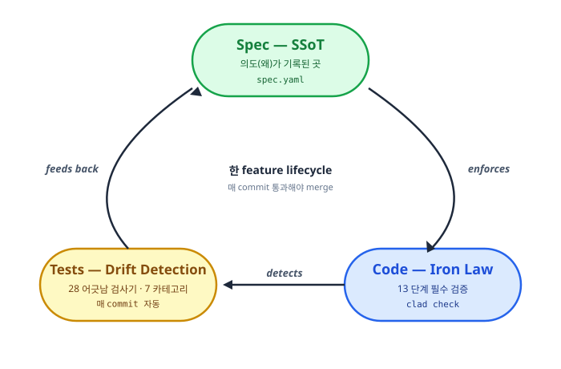
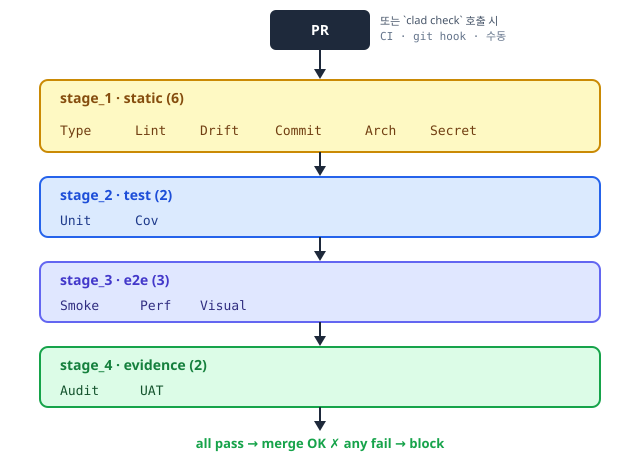
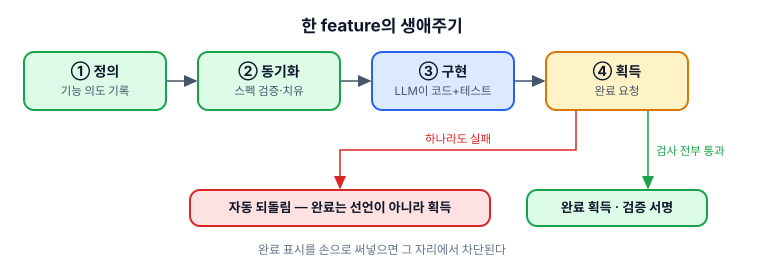
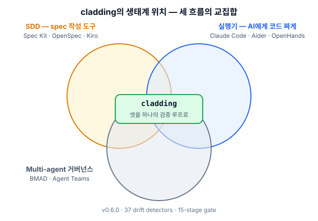

cladding
Unified Governance for AI-Coupled Engineering.
AI 가 짠 코드도 사람이 짠 코드만큼 검증되도록.
Ironclad 표준의 공식 reference 구현. AI 코딩 어시스턴트가 짠 코드가 spec 과 어긋나지 않는지 28 개의 검사기와 13 단계 검증 관문이 매 commit 마다 자동으로 대조한다.
같은 spec · 같은 모델로 측정 · event-sourcing store 벤치마크
왜 필요한가
AI 가 짠 코드의 왜 가 코드만 봐서는 안 잡힌다.
spec/features/*.yaml 이 왜 의 영구 기록같은 spec 으로 짠 코드의 패턴과 구조가 일관성 없다.
존재하지 않는 API · 함수 · 옵션을 호출하는 코드 생성.
차이점
같은 문제 상황에서 일반적인 (vanilla) AI 코딩 환경과 cladding 환경이 어떻게 다르게 동작하는지.
| 상황 | 일반 AI 코딩 | cladding |
|---|---|---|
| 코드가 spec 과 어긋날 때 | review 에서 발견하면 fix | 매 commit 자동 차단 |
| 두 명이 같은 기능 동시에 만들 때 | merge conflict 발생 | hash ID 로 다른 파일 → 충돌 0 |
| AI 가 짠 코드를 누가 검증? | 작성한 AI 가 자기 검증 (위험) | 별도 reviewer agent 가 분업 검증 |
| AI 도구 (Claude → Cursor) 바꿀 때 | 도구마다 재구성 필요 | 1 spec → 4 host 자동 미러링 |
| spec 의 권위 | AI 가 매번 다르게 해석 | 봉인된 spec 이 단일 기준 |
Hero 의 8/8 vs 2/8 은 초기 벤치마크 (상세) · 대규모 측정 진행 중.
How it works
Spec → Code → Tests 가 한 cycle 로 순환한다 — spec 이 왜 를 기록하고, Iron Law 가 검증하고, Drift detector 가 어긋남을 차단한다.

1. SSoT — 의도의 단일 기준
spec 이 왜 (무엇을 왜 만드는지) 를 기록하는 곳. 4-tier (A/B/C/D) 단일 진실 출처 (Single Source of Truth) — 의도가 위, 구현물이 아래.
| Tier | 역할 | 수정 권한 | 권위 |
|---|---|---|---|
| A — Spec | 의도 (무엇을 만들까) | 사람이 정의 | 봉인 · LLM 수정 금지 |
| B — Design | 설계 (어떻게 만들까) | 사람이 자유 편집 | A 와 일치 검증 |
| C — Derived | 구현물 (코드 · 테스트) | LLM · 사람 | 코드 보고 자동 재생성 |
| D — Audit | 감사 기록 (무엇이 일어났나) | append-only | 수정 불가 |
A 가 B 보다 우선 — 코드와 spec 이 다르면 코드가 틀린 것. 의도(A)가 변하면 모든 게 흔들리기 때문에 LLM 이 못 건드리도록 봉인.

2. Code — Iron Law (필수 통과) gate
모든 변경은 13 단계 gate 를 통과해야 한다 — 보통 CI step · git pre-push hook · clad check 수동 호출 어디서든 실행. 각 stage 가 자체 unit test 와 함께 ship 된다.

| Stage | 무엇을 검사하나 |
|---|---|
| 1.1 Type · 1.2 Lint | 타입 오류 · 코드 스타일 |
| 1.3 Drift | 28 detector 의 spec ↔ 코드 어긋남 |
| 1.4 Commit · 1.5 Arch · 1.6 Secret | 작업트리 clean · architecture invariant (forbidden import 등) · API 키 노출 |
| 2.1 Unit · 2.2 Cov | 단위 테스트 통과 · 프로젝트 coverage threshold |
| 3.1 Smoke · 3.2 Perf · 3.3 Visual | e2e 핵심 기능 동작 · 성능 예산 · UI 시각 회귀 |
| 4.1 Audit · 4.2 UAT | 모든 AC (acceptance criteria, 수용 기준) 에 증거 1건 이상 · 모든 status=done feature 에 증거 1건 이상 |
3. Test — 28 개 어긋남 검사기 (drift detector)
spec · code · test 사이 7 카테고리의 어긋남을 자동으로 잡아낸다. 전체 카탈로그: src/stages/detectors/README.md.
| 카테고리 | 무엇을 잡나 | 수 | 대표 detector |
|---|---|---|---|
| spec ↔ code drift | spec 에 있는데 코드에 없거나, 코드에 있는데 spec 에 없음 | 6 | UNMAPPED_ARTIFACT, MISSING_IMPLEMENTATION, AC_DRIFT |
| code ↔ test | 코드는 있는데 테스트 없음 · 커버리지 부족 | 6 | MISSING_TESTS, COVERAGE_DROP, HARDCODED_SECRET |
| spec ↔ test | spec 의 AC 가 테스트로 검증 안 됨 | 4 | UNTESTED_AC, STATUS_DRIFT, STALE_EVIDENCE |
| spec maintenance | spec 자체의 위생 (slug 충돌 · ID 중복) | 5 | SLUG_CONFLICT, ID_COLLISION, ENRICHMENT_PENDING |
| environment integrity | 빌드 환경 · 메타 파일 무결성 | 3 | HARNESS_INTEGRITY, META_INTEGRITY |
| architecture · capability | spec 의 아키텍처 · capability 정의와 코드 불일치 | 2 | ARCHITECTURE_FROM_SPEC, CAPABILITIES_FEATURE_MAPPING |
| governance · policy | ai_hints 정책 위반 (예: 금지 패턴 사용) | 2 | AI_HINTS_FORBIDDEN_PATTERN, ABSENCE_OF_GOVERNANCE |
4. Cycle — 한 feature 의 lifecycle
Spec → Code → Test 를 한 cycle 로 묶는 4 step. drift 가 0 이면 merge, 1 이상이면 block.

Multi-Agent Workflow
cladding 은 5 명의 에이전트가 협업하는 다중 에이전트 (multi-agent) 시스템. 각 에이전트는 명확한 역할 분담 — CQS (Command-Query Separation, 명령하는 역할 과 검증하는 역할 의 분리) — 으로 자기가 짠 작업은 자기가 승인할 수 없다. 규제 · 감사 (EU AI Act · K-AI 기본법 · SOX) 기준에 그대로 매핑된다.

Ecosystem
기존 세 카테고리의 결합부에 cladding 이 있다.

인접 도구와의 차이
- Spec Kit · OpenSpec · Tessl · Kiro — spec 을 잘 쓰게 도와주는 도구. cladding 은 거기에 더해 그 spec 과 실제 코드가 어긋나지 않는지 매 commit 자동 검사 한다.
- BMAD · ChatDev · Claude Agent Teams — 여러 AI 에이전트가 역할을 나눠 협업하는 시스템. cladding 의 5 에이전트는 그 위에 spec · 코드 · 감사 기록 까지 결합해 동작한다.
- tdd-guard — AI 가 테스트를 먼저 쓰도록 강제 하는 도구. cladding 의 13 단계 검사 중 Unit · Coverage 항목이 같은 일을 한다.
- OpenHands · Cline · Aider · Goose — AI 에게 코드를 짜게 시키는 실행기. cladding 은 그 실행기가 짠 코드를 검증 · 통제하는 상위 레이어 다.
cladding 의 차별점은 결합 — 위 네 카테고리의 핵심을 하나의 검증 흐름 으로 묶는 것.
Install
cladding 은 두 가지 경로로 시작할 수 있다 — 어느 쪽이든 같은 spec · 같은 정책 · 같은 검증 흐름 에 도착한다.
방법 1 — 마켓플레이스 (가장 빠름)
Claude Code · Codex CLI · Gemini CLI 의 마켓플레이스에서 cladding 을 설치한 뒤, AI 에게 한 줄 명령:
/cladding init "B2B 결제 SaaS"AI 가 그 자리에서 spec · 4-tier 문서 · 정책을 자동으로 채운다. 별도의 npm 설치 불필요.
방법 2 — npm (터미널 · CI · AI 도구가 없는 환경)
npm install -g cladding
clad init "B2B 결제 SaaS"
clad checknpm install -g cladding 의 postinstall 훅이 다음 4 개 채널을 자동으로 연결한다:
| 호스트 | 자동 연결 위치 |
|---|---|
| Claude Code | ~/.claude/plugins/cladding |
| Codex CLI (skills) | ~/.agents/skills/cladding-* |
| Codex CLI (MCP 서버) | ~/.codex/config.toml 의 [mcp_servers.cladding] |
| Gemini CLI | ~/.gemini/extensions/cladding |
이후 어느 AI 도구에서든 /cladding init 또는 clad init 모두 동일하게 동작한다.
npm install --ignore-scripts로 설치한 경우 postinstall 이 건너뛰어지지만, 첫clad init실행 시 자동으로 재시도한다.
세 가지 init 시나리오
clad init 은 자연어 intent 를 받아 상황에 맞는 path 를 자동 선택한다. 같은 명령, 세 가지 시작점.
| 시작 상황 | 명령 (npm 기준) | 무엇이 일어나는가 |
|---|---|---|
| 아이디어만 있을 때 | clad init "B2B 결제 SaaS 만들거야" | LLM 이 도메인 분석 → spec · 문서 · 정책 자동 생성 + 2–3 가지 후속 질문 출력 |
| 기획 문서가 있을 때 | clad init docs/plan.md | cladding 이 파일 경로를 인식 → 내용을 자동 로드해서 intent 로 사용 (절대/상대 경로 모두 지원) |
| 기존 프로젝트 도입 | clad init "이 프로젝트에 cladding 적용해줘" | 기존 코드 자동 스캔 (≥3 source files) → 관찰한 패턴 + intent 결합 |
마켓플레이스 (Claude Code · Codex CLI · Gemini CLI) 에서는/cladding init "..."형식으로 동일하게 사용 — 자유 텍스트도,/cladding init docs/plan.md같은 경로도 같게 받는다.
init 한 번이면 끝
cladding 의 목표는 spec ↔ 코드 어긋남을 막는 인프라가 되는 것 — init 이후로는 평소처럼 개발하면 된다. AI 도구가 spec 을 참조하며 코드를 짜고, clad check 가 CI · pre-commit hook 에서 자동으로 돌아 어긋남이 있으면 차단한다. 추가 수동 명령 불필요.
Status
|
version
v0.3.60
2026-05
|
준수 등급
L4
최고 · 자가 선언
|
tests
954/954
all pass
|
coverage
93.89%+
enforced
|
features
134
spec 정의
|
100 test files · Claude Code · OpenAI Codex · Gemini CLI 마켓플레이스 설치 가능
Ironclad 1.0 까지의 길 — 1.0 은 독립적인 두 개의 구현이 L4 검증 셋을 통과해야 잠긴다 (GOVERNANCE § 1). cladding 이 첫 번째.
Docs
- Why cladding (project context)
- 4-tier governance model
- Hash-based feature ID
- 28 detector catalog
- Benchmark — event store trap catch
- A/B evaluation cases
- Governance · roadmap to 1.0
License
MIT. LICENSE · 관련: Ironclad (구현 대상 표준) · harness-boot (seed).